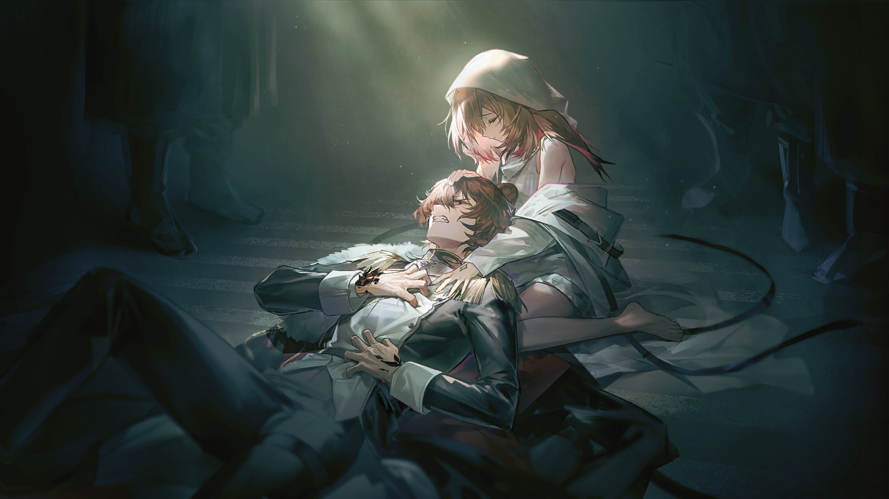
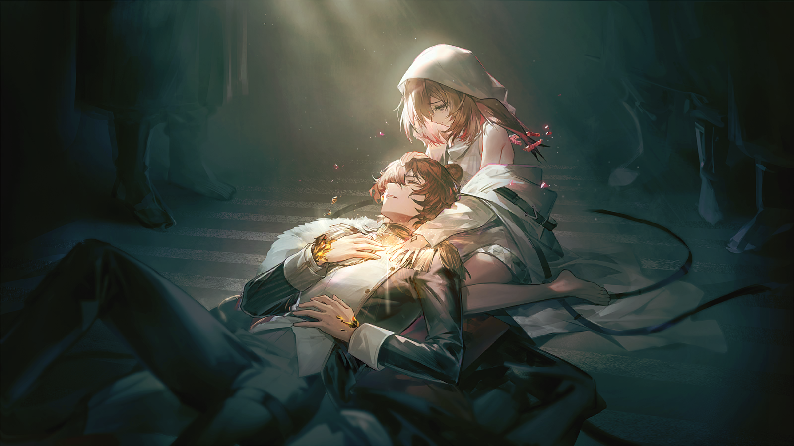

罗素
情况我已经了解了。
罗素
我现在很在意，在你来到这里的同时，这份情报会出现在商业联合会的办公桌上吗？

监正会信使
我想是的，宗师。这种体量的变故，情报不可能被完全掩盖，商业联合会也一定会知晓。
监正会信使
根据从多方信源传来的消息，我们几乎可以确定，科罗萨主矿脉一定出现了某些异常状况，此时乌萨斯国内陷入了极大的能源问题。
监正会信使
前一阵子边境上第一集团军不安分的动作看来也印证了这一点......不得不令人担忧。
监正会信使
我们不知道这样的能源异变是否会蔓延至其他地区，也不知乌萨斯会作出什么样的反应。
罗素
到现在为止，我们有没有收到过任何来自圣骏堡官方的通告？
罗素
面对这样的变故，乌萨斯的第一反应是隐瞒真相而非对外寻求合作——他们的态度已经很明显了。
罗素
濒死野兽的反扑也是最猛烈的，哪怕是已经失去资源优势的乌萨斯，依然是这片大地上最可怕的战争机器。
罗素
我们战胜过许多敌人，我们不畏惧于任何一场正面战争，但来自内部的威胁更需要我们时刻警惕。
监正会信使
您是担心商业联合会趁机威胁监正会？
监正会信使
哪怕是他们也应该清楚，如果乌萨斯在这个时候对外扩张，我们面临的会是什么样的威胁，卡西米尔经受不起别的意外！
罗素
不要低估商人逐利的野心，无论任何时候。
罗素
他们已经在动手了，从第一位征战骑士因为他们的诬告而入狱时，这场没有硝烟的战争就已经打响了。
罗素
......叫莱姆来见我，尽快。
罗素
另外，那位临光家的孩子，现在在哪？

崩溃的士兵
够了，别炸了！再炸下去山都要塌了！
崩溃的士兵
他妈的还不明白吗？这里什么都没有！一块源石渣都没有！矿已经枯了！全枯了！

绝望的士官
闭嘴吧！那也得挖下去！这里不是远北......东部的矿石还没有消失！我们只是需要先把它们都挖出来——
绝望的士官
“找到源石”，这是他妈的军令，是军令！
崩溃的士兵
那你就把这里的士兵都吊死吧！他们没办法完成你的军令了！
崩溃的士兵
伊万的眼睛瞎了，我的一只耳朵已经震聋了，在我的内脏被炸弹震碎之前吊死我好了！
崩溃的士兵
把我们都变成感染者，让我们变成石头再埋进山里去，这样山里面说不定会长出源石！
崩溃的士兵
陛下在上......救救我们这些可怜的人......救救乌萨斯吧......

士兵
事情就是这样。
士兵
根据我们截取的内部通信，第三集团军也已经得到消息，宣布与第七集团军临时休战了，只剩下机动部队待命。
军官
爆炸的具体位置在？
士兵
就在中部荒野上，与我们同第四集团军作战的最前线直线距离两千三百公里左右，附近没有正在进行冬季航行的移动城市。
士兵
但在那里散居的聚落没有被提前疏散。听说人和动物当场就灰飞烟灭了，现场只留下颜色奇怪的土地和灰烬......威力相当恐怖。
军官
......
士兵
第一集团军难道真的研究出了了不得的武器？
军官
在接到指挥部的消息之前，先让所有人继续原地待命。
军官
我相信总司令会做出最合适的决策。在那之前，第二集团军第二师第六炮兵团的战士们——
军官
仍会在圣骏堡外，誓死拖住叛徒前进的步伐。

信使
......以上就是女大公殿下的回复。
信使
最后一批物资已经送达，我们所知的、与第一集团军新武器相关的情报，也已记录在信函中。
信使
女大公殿下想要告诉您的是，远北政府能为第四集团军提供的帮助，到此为止了。
信使
我们履行了承诺，希望阁下也不要忘记您最初的目标，即使是在大部队与第二集团军僵持不下的如今。

阴沉的军人
......

阴沉的军人
我明白了，可我希望女大公清楚现在的局势。
阴沉的军人
那些迂腐派依然牢牢把持着议会，如今更是依仗第一集团军的研究，拒绝我们正当的诉求——让这个国家重新强大起来的诉求。
阴沉的军人
时间是宝贵的，如果第四集团军迟迟不能取得预期中的成果，我们将这个国家拱手相让，恐怕布列斯克也无法独善其身。
信使
我无权替殿下回答您的问题，但我会承诺忠实地将您的意见转达给她。
信使
除此之外，我或许可以代替她，为您再讲述一个古老的童话。
信使
北风与太阳打赌，谁能让路上的行人脱去棉衣——

阴沉的军人
......
阴沉的军人
来人，送这位尊贵的信使离开。
阴沉的军人
一定要安全地护送她离开驻地，确保我的消息会准确地传回布列斯克。
信使
不必。此行我另有要事在身，不会立刻返回布列斯克。
信使
请保重，各位。一切都是为了乌萨斯的荣光。
阴沉的军人
......
阴沉的军人
为了乌萨斯的荣光。
喑哑的声音
滚......
喑哑的声音
都给我滚开！

声音沙哑的少年
呵......这可是你自己要撞上来的。
声音沙哑的少年
要怪，就怪自己不自量力吧。
少年踢开脚下那被他一刀割断喉管的卫兵，往指挥室的更深处走去。
通往甲板的方向已被他用锋刃清出通路，地板上四散着尚在抽搐、鲜血满溢的身躯。周围仍站着的，已无一人敢于继续上前。

威严的军人
......
威严的军人
阿纳托利。
脚步声响起。人群迅速后退，四散开去。
一双军靴，逆着人流，蹚过血水前进，直到响起金属与刀尖相碰的声音才停下。
军人微微低头，注视着少年。
威严的军人
玩够了吗？

声音沙哑的少年
......
威严的军人
玩够了，就把刀放下。

威严的军人
我说过，惩罚几个惹怒你的人，这不要紧；在人前表现出极端的愤怒，却只是在展示你的软弱。
威严的军人
太不像话了，阿纳托利。

阿纳托利
可您把我关在这里。在我痛苦且了无生趣的时候，您把我关在这里！
阿纳托利
您甚至不让我去见证“库茨金娜”的诞生。
威严的军人
这是为了保证你的安全。

阿纳托利
安全？——哈哈，安全！
阿纳托利
我可是在您的领地里，伟大的斯韦特兰纳元帅！第一集团军的心脏地带，这片大地上哪会有比这更安全的地方？
阿纳托利
然而您却不愿让我离开一步，连去甲板上也不被允许......
阿纳托利
难道我得了矿石病，就变成了您的囚犯，不再是您的孩子，不再是乌萨斯光荣的军人？

斯韦特兰纳
你与从前别无二致，阿纳托利。我待你自然也同样。
阿纳托利
那就放我走！我要到泽尔格勒去，我要像以前那样去巡逻，去照管我城市的安危——您答应过我的！
斯韦特兰纳
......
阿纳托利
瞧，您又不说话了。您一定是反悔了。
斯韦特兰纳
亚沙，让人来收拾一下。流程和从前一样。

利落的近侍
是。
阿纳托利
母亲！
斯韦特兰纳
是的，孩子，我答应过你。泽尔格勒会是你的城市，但那是以后，不是现在。
斯韦特兰纳
在你的病情稳定之前，我不会让你离开我的视线。明白吗？
阿纳托利
不，我不明白！
阿纳托利
如果您不放我走，我就只能继续像现在这样，用您送我的这把刀，杀到没有人能看住我为止。反正这些蠢货也不敢跟我动手——
斯韦特兰纳
我说了，是在你的病情稳定之前。如果你的病情稳定下来，当然就可以离开，去做你想做的事。
阿纳托利
呵，您也开始玩文字游戏了。那些从圣骏堡来的俊俏文官难道真的改变了您对花言巧语的看法？
阿纳托利
我早该把他们都杀了的。
斯韦特兰纳
我已经抓住了那个宣称自己能治愈矿石病的卡特斯。

阿纳托利
......什么？

斯韦特兰纳
和传闻中一样，与她同行的那些人都是矿石病患者，他们都感觉不到痛苦，也再没有病发迹象。
斯韦特兰纳
我想，即使她只是个骗子，也多少有一见的价值。

阿纳托利
您要我向一个骗子展示我的软弱和病痛。
斯韦特兰纳
怎么会呢？
军人用指腹轻触抵在胸前的刀尖，少年颤抖着，终于将刀缓缓放下。
而后，母亲将孩子拉入一个紧密的拥抱。
斯韦特兰纳
如果她真是骗子，那她和她的同伴都不会有活着走出驻地的机会。可如果她真能做到稳定你的病情，甚至治愈它......
斯韦特兰纳
那我将会拥抱她，就像现在拥抱你一样。
斯韦特兰纳
一个没有来处的、卑贱的卡特斯，将成为光荣的第一集团军的一员，只因为她帮助了你，阿纳托利。
阿纳托利
......母亲......

斯韦特兰纳
所以擦去泪水吧，孩子。我们的客人就要到了。
斯韦特兰纳
亚沙，将她带上来。
人影往来，四周遍洒的鲜血很快被擦去，地面光洁如新。
而后，一组整齐而沉重的脚步由远及近地踏来，其中携着的不和谐的虚浮脚步，令在场所有人都抬起头来。
它的主人出现在众人面前。

卡特斯
......
阿纳托利
什——
不是想象中邋遢而自诩虔诚的中年人，也并非体面精致的骗术专家。
只是一个瘦弱的女孩，睁着茫然的眼睛，像驮兽一样被驱赶着，站到了深色的地毯之上。
卡特斯
请问......
阿纳托利
就是她？
阿纳托利
她看上去能被随便一阵风吹倒，这样的家伙能做什么？哪怕是拿去当柴火烧了，都没有取暖的作用。
斯韦特兰纳
以貌取人是不明智的，她确确实实就是那群流民的领头人物。
斯韦特兰纳
我的亲卫队发现她时，流民正将她拥簇，也将她拱卫，情形和两年多前圣骏堡那场审判别无二致。
斯韦特兰纳
这倒显得我们要将她从人群中带走的行径，与那次审判有着如出一辙的无耻与荒谬了。
阿纳托利
您把她比作圣愚？
斯韦特兰纳
......别再纠结这些了，阿纳托利。只要她能帮上你，我不在乎她究竟是什么。贱民还是圣愚，都不重要。
斯韦特兰纳
你，上前来。
女孩迟疑地摇头，仍然站在原地。
卡特斯
请问......
卡特斯
请问和我一起来的同伴是否已经得到妥善的安置？
卡特斯
我需要确保这一点。
斯韦特兰纳
你很有胆量。
卡特斯
我只是想保护与我同行的人们。
斯韦特兰纳
但是你还需要能看清现实——你没有讨价还价的权利。
斯韦特兰纳
我再给你一次机会。上前来，小姐。
卡特斯
......
卡特斯似乎认清了现状。她依言上前，阿纳托利却在她动作的下一秒不断往后退去。

斯韦特兰纳
阿纳托利？
阿纳托利
她是感染者！如果她能治愈感染者，那为什么她不先治愈她自己？
阿纳托利
母亲，这就是个骗子。我不想再在这些无谓的尝试上浪费精力了。我没有太多时间——

斯韦特兰纳
收回它。
阿纳托利
母亲？

斯韦特兰纳
收回它！你不许再说这样的话。你还有很多时间，你会好起来的，你一定会。
高大的女性转向一旁的女孩，直视着她的眼睛。
斯韦特兰纳
听着，小姐。我需要你像治好那些流民一样治好我的孩子。
斯韦特兰纳
我以第一集团军总司令，斯韦特兰纳·乌里扬诺娃·卜捷里娜的名誉起誓，如果你当真能将他的病痛祛除......
斯韦特兰纳
在我有限的生命中，第一集团军将是你永远的后盾，你的同胞也会受到保护。

卡特斯
......
卡特斯
我必须先确认他的病情，但我的靠近似乎令他感到不适。
卡特斯
如果我甚至无法触碰他，又要如何治愈他呢？
阿纳托利
哼。要是你当真有能治愈矿石病的奇异伟力，这一点距离又怎么会成为障碍？
少年侧头，似乎是要将颊边的源石结晶藏进发丝之中。他甚至不愿正面去打量眼前瘦弱的女孩，直觉使他拒绝靠近。
然而卡特斯女孩似乎做出了一个决定。她与强硬“邀请”她前来的统领对视片刻，而后继续向少年走去。
卡特斯
女士，我相信您的承诺......
阿纳托利
别过来！
阿纳托利
贱民，要是你胆敢继续向我靠近一步——
阿纳托利
滚开！我让你滚开！！！
斯韦特兰纳
阿纳托利，把刀放下——
卡特斯没有停下，任由锐利的刀锋在自己脖子上擦过，留下一道渗血的伤口。
少年用一只手捂住面颊，踉跄着不断后退，仿佛受伤的是他自己，而不是面前的女孩。
矿石病所致的并发症似乎突然激烈地发作起来，又或许只是眼前的景象唤醒了某些使人疼痛的记忆。
阿纳托利
我不是——我没有——
卡特斯
......请不要紧张......
卡特斯
很快就能结束了。

就在少年退无可退，即将跌落在地时，瘦弱的女孩快步上前。她伸出手，将比自己高出一个头的人稳当地拢在了怀中。
两人都跌落在地。坠落时，少年的双手都不住颤抖，再握不紧刀；他的唇色也惨白如纸，再吐露不出一句叫骂。
疼痛已经完全将他侵蚀。
阿纳托利
咳呃——
卡特斯
天哪，您病得很重......
卡特斯
而且您快要过呼吸了。
阿纳托利
嗬......
卡特斯
接下来，请跟着我呼吸的节律，和我的话语，来找回胸腔充盈的感觉。
卡特斯触摸到他冰冷而紧绷的手指，看见那些黑色的源石结晶从血肉中伸出，坚硬、锐利，就像这个人本身。
她将手贴在少年的额头，声音低而轻缓，温柔地引导着对方的呼吸。
卡特斯
呼......
卡特斯
“相信吧。相信我们的生命。”
卡特斯
“相信我们的身体与思维，相信我们心脏的每一次律动，相信我们肺叶的每一次收放。”
卡特斯
“相信我们自身......”
卡特斯
“是一切力量的来源。”
阿纳托利
咳、咳咳！
卡特斯
您也只是一个受苦的人。
阿纳托利
我不......我不要你的怜悯——
阿纳托利
谁都可以，我唯独不要一个感染者的怜悯......！
卡特斯
这绝非怜悯，而只是悲哀。
卡特斯
因为我无法治愈您的矿石病。
阿纳托利
......骗子......
卡特斯
但......

卡特斯
我能做的，只是抚去你此世的痛苦......
斯韦特兰纳
——！
话语间，随着少年体表那些黑色源石的褪色、变化......他脸上因疼痛而狰狞的表情也逐渐变得舒缓。
他仍然闭着眼，但原本剧烈起伏的胸膛已经平静下去。
卡特斯
如此，我们便能迈向彼世。
卡特斯
一个没有痛苦、没有悲伤的所在。
卡特斯
一个永恒之地。